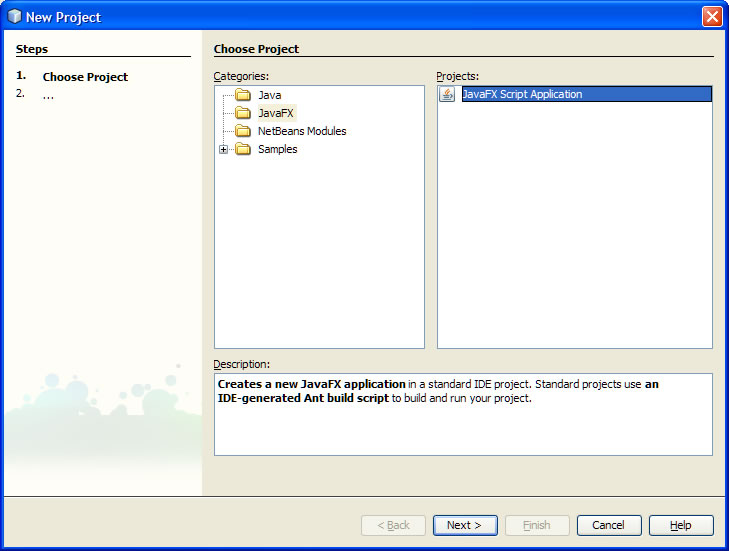
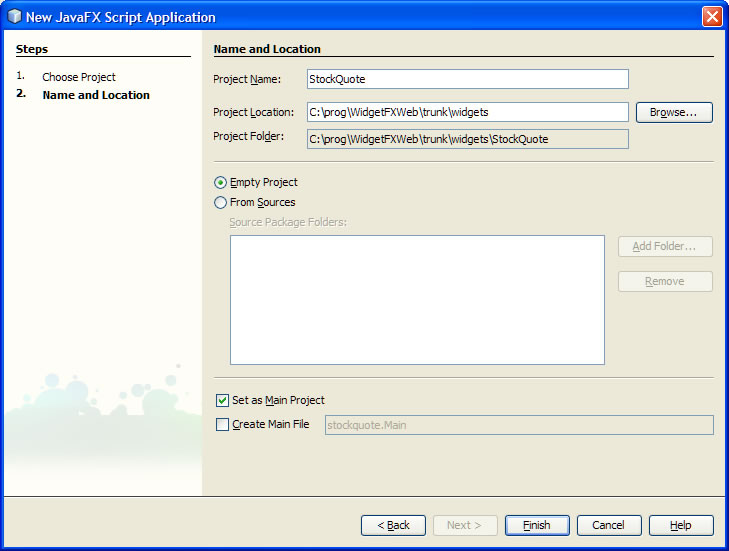
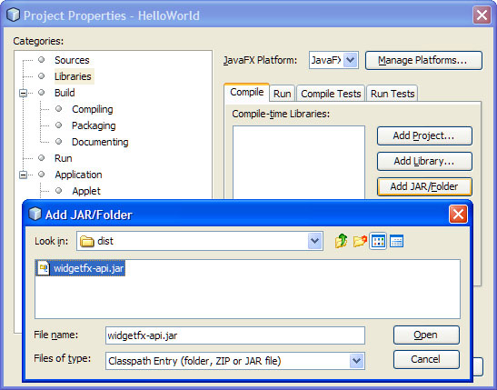
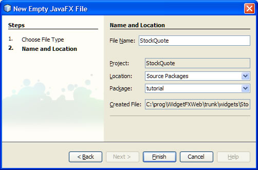
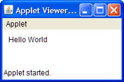

For the purpose of this example we are going to use NetBeans as the IDE. This is not an endorsement of the NetBeans editor, and everything shown can be accomplished with command line tools or your editor of choice.
You need the following technologies to get started developing WidgetFX
To install the Java SE Update 10, do the following:
Make sure to check back frequently and get the latest build.
To install the JavaFX SDK:
Make sure to specify Java SE Update 10 as the JDK for Netbeans when you first start it.
To download the latest version of the WidgetFX SDK.
To start with, create a new JavaFX project in NetBeans:

On the second page of the wizard, choose a name for the project (StockQuote might be nice), and select options as shown in the picture:

We also need to add in the widgetfx-api.jar file to the project for widget development. This can be found as part of the Widget SDK bundle.
Open the Project Properties dialog by .... and add the jar as shown in the following screenshot:

First, add a new empty JavaFX file to the project. It should be named "StockQuote" and placed in the "tutorial" package.

You should have a simple file with just a package statement and comments. If NetBeans inserted a full class defnition, you can just delete that and continue on.
Creating a new widget is as simple as importing the org.widgetfx package and creating a new Widget instance. Here is an empty widget:
package tutorial;import org.widgetfx.*;Widget { }
This is not very interesting, so let's add in a stage with a rectangle for the background:
Widget {
stage: Stage {
content: Text {
translateX: 10
translateY: 20
content: "Stock Quote"
}
}
}
The Widget class extends the JavaFX Application class so you can run it in directly in the Applet Runner to get a quick preview. To see what it looks like so far, right click on the "StockQuote.fx" file and choose "Run Applet":

This isn't very interesting so far, so let's hook it up to a Web Service to fetch realtime data.
We are going to use the Web Service X StockQuote service to retrieve information. It supports HTTP or SOAP interfaces, but for simplicity we will use the HTTP interface in this example.